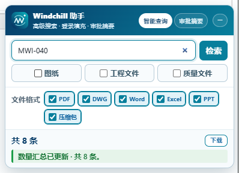
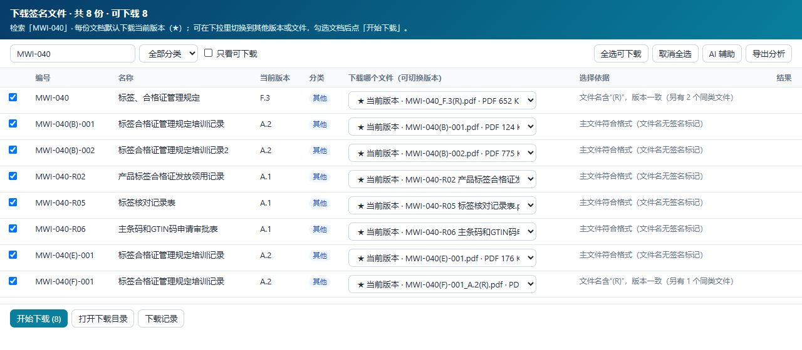
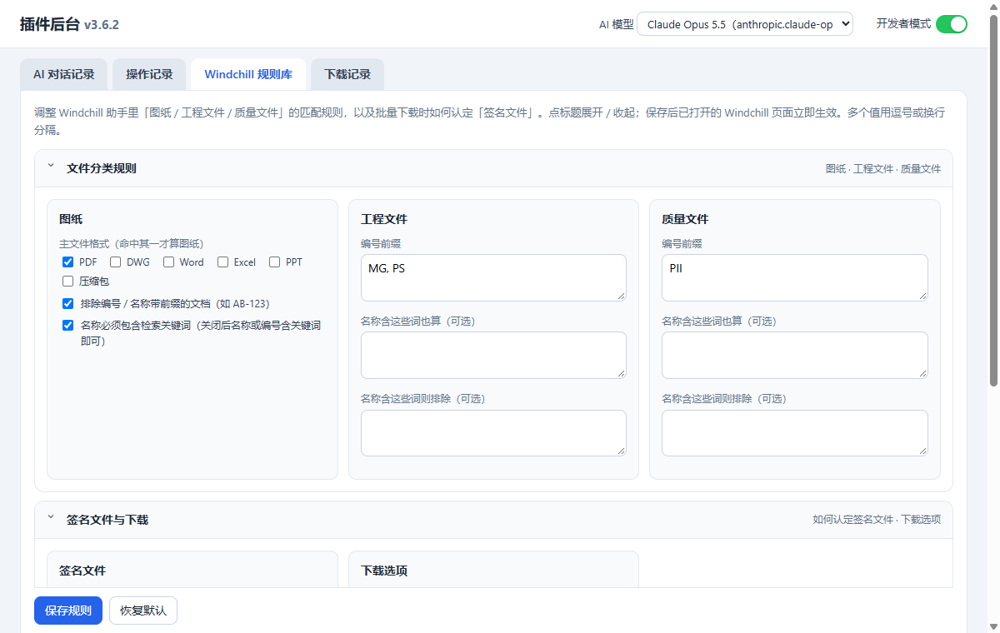

Medtronic Work Assistant
Windchill 智能检索 · 签名文件批量下载 · Fabriq AI 优化 · 一站式工作助手（Chrome 插件）
使用说明 · 版本 3.6.3
一、安装（本地安装，不需要 Google 账号）
- 把收到的
MedtronicWorkAssistant-v3.6.3.zip 解压到一个固定文件夹（例如 D:\Tools\），安装后不要移动或删除这个文件夹。
- 在 Chrome 地址栏输入
chrome://extensions 回车，打开右上角的 开发者模式。
- 点左上角 加载已解压的扩展程序，选择解压出来的
MedtronicWorkAssistant 文件夹。
- 点浏览器右上角的拼图图标，把 Medtronic Work Assistant 固定到工具栏。
- 点工具栏图标，展开 Windchill，填写自己的用户名和密码，点「保存账号」。
注意：每次打开 Chrome 可能弹出“请停用开发者模式扩展程序”的提示，点 保留 即可。如果公司策略禁用了开发者模式，这种安装方式不可用，请联系维护者。
升级：用新版 zip 解压后覆盖原文件夹，再到 chrome://extensions 点插件卡片上的 刷新 按钮，最后刷新 Windchill 页面。账号、规则库、记录都会保留。
二、工具栏图标
- 应用列表：点应用名称直接打开对应网站；点右侧箭头展开该应用的设置（账号、每日自动打开等）。
- ⚙ 设置：打开「插件后台」（AI 模型、记录、Windchill 规则库等）。
- ■ 中止：应急停止键，停止自动点击 / 自动填充等正在运行的自动功能。
- 默认显示 Windchill、Fabriq、OEE 三个入口。
三、Windchill 助手

Windchill 页面右下角的助手
智能查询
- 打开 Windchill 页面，右下角出现助手（可拖动；点 − 收起为图标，再点图标展开）。
- 输入文件号、文件名或关键词，勾选 图纸 工程文件 质量文件 和文件格式（可多选）。
- 停止输入后自动汇总数量，显示「共 N 条」；点「检索」或按 Enter，结果由 Windchill 原生页面展示。
审批摘要
切到「审批摘要」标签：显示当前待审批任务数量和分组；打开具体任务时，页面顶部会出现“审批重点”（主题、编号、版本、流程、负责人、截止时间等）。
登录自动填充
在 Windchill 登录页自动填入账号密码，并自动点击「完成任务 / Complete Task」。助手里的「自动填充」勾选项可随时关闭。
每日自动打开
在工具栏弹窗 Windchill 卡片里打开「每日自动打开」并设置时间，浏览器会按时打开 Windchill 首页。
四、批量下载签名文件
- 先检索出结果，点助手里「共 N 条」右侧的 下载 按钮，会在新标签页打开下载页（再次点击只会刷新并切回这个标签页，不会重复新开）。
- 每份文档默认选好“签名文件”：文件名含
(R) / 签名 / 签字 / 会签 / signed 的 PDF 优先，且优先选文件名带当前版本号的；没有时取 PDF 主文件。
- 每一行都有下拉，可切换到其他版本（例如
_D.2(R).pdf、_E.4(R).pdf）或其他文件；带 ★ 的是当前版本。
- 勾选需要的文档，点 开始下载。文件保存到浏览器下载目录的
Windchill\日期_关键词\ 文件夹。

下载页：筛选、勾选、每行切换版本
- 工具栏：按编号 / 名称筛选、分类筛选、全选 / 取消全选、AI 辅助（规则判断不出时让 AI 选文件，需要先配置 AI）、导出分析。
- 下载前会先验证链接（避免把登录页当成文件保存），遇到服务器临时错误会自动重试。
- 每次下载结果记录在插件后台的「下载记录」，失败原因、HTTP 状态都能查到。
提示：下载时请保持 Windchill 页面打开（不要关闭或刷新）；只能下载你本人有权限的文件。
五、Windchill 规则库（插件后台）
点工具栏 ⚙ 打开插件后台，进入「Windchill 规则库」。按分组折叠显示，改完点页面底部「保存规则」，已打开的 Windchill 页面立即生效：
- 文件分类规则：图纸（主文件格式、是否排除带前缀编号、名称是否必须含关键词）、工程文件 / 质量文件（编号前缀、名称关键词、排除词）。默认：工程文件 MG / PS，质量文件 PII，图纸为无业务前缀的 PDF。
- 签名文件与下载：哪些文件名算签名文件、没有签名标记时怎么处理、下载子目录、并发数、下载前验证。
- 规则测试：输入编号 / 名称，看会被分到哪一类。
- AI 建议：根据最近一次检索样本，让 AI 给出规则调整建议（只合并到表单，需要你确认保存）。

插件后台 · Windchill 规则库六、Fabriq AI 优化
在 Fabriq 工单详情中点「AI 优化」展开右侧栏，可单项优化标题、描述、任务、时间，或一键完整优化、进展更新、翻译；生成后先对比，确认后才应用。应用前会保存快照，标题 / 描述 / 任务文字可一键撤销；不能自动撤销的改动会在后台操作记录里列出原值。
七、插件后台
| 页面 | 内容 |
|---|
| AI 对话记录 | 每次 AI 调用的提示词、返回、模型、耗时，可搜索、下载。记录保存在浏览器本地，升级插件不会丢；并自动备份到下载目录的 MWA-Logs 文件夹（ai-log.json / ai-log.md）。 |
| 操作记录 | 各功能关键操作（下载、自动点击、应用 AI 结果等）按日期时间倒序汇总，可按应用 / 结果筛选。 |
| Windchill 规则库 | 见上一节。 |
| 下载记录 | Windchill 每次下载的结果和失败原因。 |
| 页面右上角 | AI 模型下拉（选中即生效，全插件共享）和开发者模式开关。 |
AI 相关功能（Fabriq 优化、AI 辅助选文件、AI 建议规则）需要先配置 AI 接口和 Key，请联系维护者获取配置方式；配置好后在后台右上角选择模型即可。
八、常见问题
- 看不到助手？确认当前是企业 Windchill 页面，刷新页面；在
chrome://extensions 确认插件已启用。
- 检索结果数量和 Windchill 页面不一致？助手按“名称或编号包含关键词”统计，Windchill 原生搜索是全文检索，会多出只在正文里出现关键词的结果。
- 下载提示“返回的是网页”或 HTTP 500？多为登录过期或服务器临时错误：刷新 Windchill 重新登录后再试；仍失败请把「下载记录」里的那一行发给维护者。
- 某份文档没有可选文件？该文档没有 PDF；可在下拉里改选其他文件，或在规则库里调整“允许的文件格式”。
- 更新后功能异常？在
chrome://extensions 点插件“刷新”，再刷新业务页面。
九、隐私与安全
- 账号、规则、记录都只保存在你本机的 Chrome 中，不会发送给维护者；Windchill / EHR 账号密码以明文保存在浏览器本地存储，请不要在共用电脑上使用。
- AI 请求只发送到你配置的 AI 接口；发送前会自动隐藏疑似密钥 / 密码字样。AI 的 Key 加密保存在本机。
- 插件只读取 / 下载你有权限的页面和文件，不会绕过 Windchill 的访问控制；下载动作都需要你点击确认。
十、升版记录
| 版本 | 主要变化 |
|---|
| 3.6.3 | 修复 Fabriq 中文界面下任务日期 / 负责人写入失败导致中断。 |
| 3.6.0–3.6.2 | 圆角 iOS 风格工具栏；后台右上角切换 AI 模型；Windchill 规则库分组折叠、下载记录独立页面；AI 记录持久化并自动备份为文件；密码输入圆点显示。 |
| 3.5 | 工具栏精简为 ⚙ 设置 / ■ 中止；设置直接打开插件后台。 |
| 3.4 | AI 接口与 Key 集中到后台管理；模型下拉合并 OpenAI / Claude。 |
| 3.3 | 下载页每行下拉切换版本（默认当前版本）。 |
| 3.2 | 操作记录汇总各插件；弹窗应用入口可按需显示；下载页改为新标签页、只保留一个。 |
| 3.1 | Windchill 规则库；批量下载签名文件；悬浮窗只显示汇总。 |
| 3.0 | Fabriq AI 重构：可靠性层、撤销、AI 对话记录与操作记录后台。 |